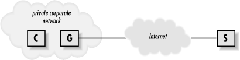
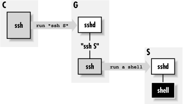
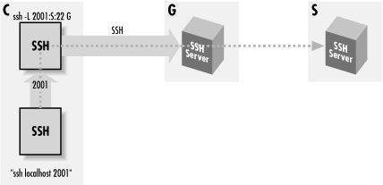

|  |
11.5. Connecting Through a GatewayHost
All along we've assumed that your outgoing connectivity is unlimited: that you can establish any outgoing TCP connection you desire. Even our discussions of firewalls have assumed that they restrict only incoming traffic. In more secure (or simply more regimented) environments, this might not be the case: in fact, you might not have direct IP connectivity at all to the outside world. In the corporate world, companies commonly require all outgoing connections to pass through a proxy server or gateway host : a machine connected to both the company network and the outside. Although connected to both networks, a gateway host doesn't act as a router, and the networks remain separated. Rather, it allows limited, application-level access between the two networks. In this case study, we discuss issues of SSH in this environment:- Connecting transparently to external hosts using ssh
- Making scp connections
- Running SSH-within-SSH by port forwarding
11.5.1. Making Transparent SSH Connections
Suppose your company has a gateway host, G, which is your only gateway to the Internet. You are logged into a client host C and want to reach a server host S outside the company network, as shown in Figure 11-14. We assume that all three machines have SSH installed.
Figure 11-14. Proxy gateway
To make a connection from client C to server S now requires two steps:- Connect from C to gateway G:
# Execute on client C $ ssh G
- Connect from G to server S:
# Execute on gateway G $ ssh S
you must run a remote ssh on gateway G that in turn contacts server S:# Execute on client C $ ssh S /bin/ls
This isn't only annoying but also can complicate automation. Imagine rewriting all your SSH-based scripts to accommodate this environment. Fortunately, SSH configuration is flexible enough to afford a neat solution, which we now present using SSH1 features and syntax. We use public-key authentication to take advantage of the options of the authorized_keys file, and ssh-agent with agent forwarding so that authentication passes on transparently to the second SSH connection (see Figure 11-15).# Execute on client C $ ssh G "ssh S /bin/ls"

Figure 11-15. Chained SSH connections through a proxy gateway
Suppose your account on gateway G is gilligan, and on server S it is skipper. First, set up your SSH client configuration file so the name S is a nickname for accessing your account on gateway G:Next, on gateway G, associate a forced command with your chosen key to invoke an SSH connection to server S: [Section 8.2.4, "Forced Commands "]# ~/.ssh/config on client C host S hostname G user gilligan
Now, when you invoke the command ssh S on client C, it connects to gateway G, runs the forced command automatically, and establishes a second SSH session to server S. And thanks to agent forwarding, authentication from G to S happens automatically, assuming you've loaded the appropriate key. This can be the same key you used to access gilligan@ G or a different one.[144]# ~/.ssh/authorized_keys on gateway G command="ssh -l skipper S" ...key..
[144]Note that if you want to use this setup for an interactive connection, you need to use the -t option to ssh, to force it to allocate a tty on G. It doesn't normally do that, because it doesn't have any way to know that the remote command -- in this case, another instance of ssh -- needs one.This trick not only provides a transparent connection from client C to server S, it also sidesteps the fact that the name S might not have any meaning on client C. Often in this kind of network situation, your internal network naming scheme is cut off from the outside world (e.g., split DNS with internal roots). After all, what's the point of allowing you to name hosts you can't reach? Thanks to the Host configuration keyword for SSH clients, you can create a nickname S that instructs SSH to reach that host transparently via G. [Section 7.1.3.5, "Making nicknames for hosts"]
11.5.2. Using SCP Through a Gateway
Recall that the command:actually runs ssh in a subprocess to connect to S and invoke a remote scp server. Section 3.8.1, "scp1 Details" Now that we've gotten ssh working from client C to server S, you'd expect that scp would work between these machines with no further effort. Well, it almost does, but it wouldn't be software if there weren't a couple of small problems to work around:$ scp ... S:file ...
- Problems invoking the ssh subprocess, due to the forced command
- Authentication difficulties due to lack of a tty
11.5.2.1. Passing along the remote command
The first problem is that the ssh command on client C sends a command to be executed on server S, that starts the scp server, but now that command is ignored in favor of our forced command. You have to find a way to relay the intended scp server command to S. To accomplish this, modify the authorized_keys file on gateway G, instructing ssh to invoke the command contained in the environment variable SSH_ORIGINAL_COMMAND: [Section 8.2.4.4, "Examining the client's original command"]Now the forced command invokes the proper scp-related command on server S. You aren't quite done, however, because this forced command unfortunately breaks our existing setup. It works fine for ssh invocations on client C that run a remote command (e.g., ssh S /bin/ls), but it fails when ssh S is invoked alone to run a remote shell. You see, SSH_ORIGINAL_COMMAND is set only if a remote command is specified, so ssh S dies because SSH_ORIGINAL_COMMAND is undefined. You can work around this problem using the Bourne shell and its parameter substitution operator :- as follows:# ~/.ssh/authorized_keys on gateway G command="ssh -l skipper S $SSH_ORIGINAL_COMMAND" ...key...
# ~/.ssh/authorized_keys on gateway G
command="sh -c 'ssh -l skipper S ${SSH_ORIGINAL_COMMAND:-}'" ...key...11.5.2.2. Authentication
The second scp-related problem is authentication for the second SSH connection, from gateway G to server S. You can't provide a password or passphrase to the second ssh program, since it has no tty allocated.[145] So you need a form of authentication that doesn't require user input: either RhostsRSA, or public-key authentication with agent forwarding. RhostsRSA works as is, so if you plan to use it, you can skip to the next section. Public-key authentication, however, has a problem: scp runs ssh with the -a switch to disable agent forwarding. [Section 6.3.5.3, "Enabling agent forwarding"] You need to reenable agent forwarding for this to work, and this is surprisingly tricky.[145]Actually, you can hack your way around this, but it's ugly and we won't go into it.Normally you could turn on agent forwarding in your client configuration file:
but this doesn't help because the -a on the command line takes precedence. Alternatively, you might try the -o option of scp, which can pass along options to ssh, such as -o ForwardAgent yes. But in this case, scp places the -a after any -o options it passes where it takes precedence, so that doesn't work either. There is a solution, though. scp has a -S option to indicate a path to the SSH client program it should use, so you create a "wrapper" script that tweaks the SSH command line as needed, and then make scp use it with -S. Place the following script in an executable file on client C, say ~/bin/ssh-wrapper :# ~/.ssh/config on client C, but this FAILS ForwardAgent yes
#!/usr/bin/perl
exec '/usr/local/bin/ssh1', map {$_ eq '-a' ? ( ) : $_} @ARGV;and it should work.scp -S ~/bin/ssh-wrapper ... S:file ...
11.5.3. Another Approach: SSH-in-SSH(Port Forwarding)
Instead of using a forced command, here's another way to connect by SSH through a gateway: forward a port on client C to the SSH server on S, using an SSH session from C to G, and then run a second SSH session through the first (see Figure 11-16).
Figure 11-16. Forwarded SSH connection through a proxy gateway
That is:This connects to server S by carrying the second SSH connection (from C to S) inside a port-forwarding channel of the first (from C to G ). You can make this more transparent by creating a nickname S in your client configuration file:# Execute on client C $ ssh -L2001:S:22 G # Execute on client C in a different shell $ ssh -p 2001 localhost
Now the earlier commands become:# ~/.ssh/config on client C host S hostname localhost port 2001
Because this technique requires a separate, manual step to establish the port forwarding, it is less transparent than the one in [Section 11.5.1, "Making Transparent SSH Connections"]. However, it has some advantages. If you plan to use port or X forwarding between C and S with the first method, it's a little complicated. scp not only gives the -a switch to ssh to turn off agent forwarding, but also it gives -x and -o "ClearAllForwardings yes", turning off X and port forwarding. So you need to modify the earlier wrapper script to remove these unwanted options as well. [Section 11.5.2.2, "Authentication"] Then, for port forwarding you need to set up a chain of forwarded ports that connect to one another. For example, to forward port 2017 on client C to port 143 (the IMAP port) on server S:# Execute on client C $ ssh -L2001:S:22 G # Execute on client C in a different shell $ ssh S
This works, but it's difficult to understand, error-prone, and fragile: if you trigger the TIME_WAIT problem [Section 9.2.9.1, "The TIME_WAIT problem"], you have to edit files and redo the tunnel just to pick a new ephemeral port to replace 1234. Using the SSH-in-SSH technique instead, your port and X-forwarding options operate directly between client C and server S in the usual, straightforward manner. The preceding example becomes:# ~/.ssh/config on client C host S hostname G user gilligan # ~/.ssh/authorized_keys on gateway G command="ssh -L1234:localhost:143 skipper@S" ...key... # Execute on client C $ ssh -L2017:localhost:1234 S
This final command connects to server S, forwarding local port 2017 to the IMAP port on S.# ~/.ssh/config on client C host S hostname localhost port 2001 # Execute on client C $ ssh -L2001:S:22 G # Execute on client C in a different shell $ ssh -L2017:localhost:143 S
11.5.4. Security Differences
The two methods just discussed differ in their security properties. Again, we assume the situation with machines C, G, and S as used earlier.11.5.4.1. "Server-in-the-middle" attack
The first method was a chain of two SSH connections in series. The weakness with this is that if the SSH server in the middle (on G ) has been compromised, the session data is exposed. Data from C is decrypted by that server and passed to the second SSH client (also on G ), which then reencrypts it for transmission to S. So the session plaintext is recovered on G: a compromised server there has access to it and can read and alter it at will. The second method, with port forwarding, doesn't suffer from this weakness. The server on G is in no special position with regard to observing the forwarded SSH connection from C to S. Any attempt to read or alter that session will fail, in the same way that network snooping or an active network attack will fail.11.5.4.2. Server authentication
On the other hand, the port forwarding method is weaker than the chain-of-connections when implemented with SSH1 or OpenSSH, because it lacks server authentication. The reason for this is that the SSH1 and OpenSSH clients both behave specially when the server address is 127.0.0.1 ("localhost"): they force acceptance of the host key, regardless of what key is actually provided. More precisely: they omit checking the host key against the known-hosts list, behaving always as if the server-provided host key were associated with "localhost" in the list. The reason for this feature is convenience. If a user's home directory is shared between machines, the SSH client on each machine sees the same per-user known-hosts file. But the name "localhost" is special, in that on each machine it means something different: that same host. So if the user employs ssh localhost on multiple machines, she will constantly get spurious warnings about the host key having changed. The known-hosts file maps "localhost" to the host key of the last host on which she did this, not the current one. So the problem here is that, since the remote IP address of the SSH session from C to S is actually localhost, it effectively omits server authentication, and is thus vulnerable to a man-in-the-middle or spoofed server attack. SSH2 doesn't have this special treatment of localhost and so doesn't exhibit the weakness. Its known-hosts list is also more fine-grained: it maps server sockets ([host,port] pairs) to keys, rather than server hosts. This means you can have separate keys for each locally forwarded port. So, to be as secure as possible, you don't just accept the server host key the first time you use ssh2 to connect from C to S over the forwarded port 2001 on C. Doing so circumvents server authentication for that first connection. Instead, before making the first connection, you should copy S 's host key into this file on C: ~/.ssh2/hostkeys/key_2001_localhost.pub. This associates S 's host key with the socket (localhost,2001), and you will have proper server authentication for the initial forwarded connection. |  | |
| 11.4. Kerberos and SSH |  | 12. Troubleshooting and FAQ |